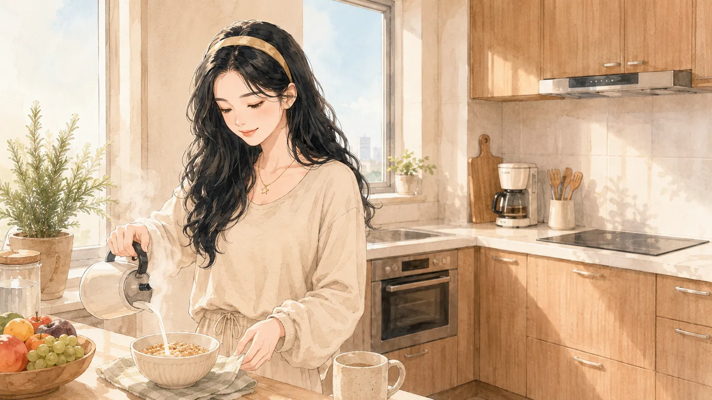

AI 生图
用 AI 给 AI 写 Prompt
用户说"Alice 在阳台发呆"——但生图模型需要的不是这句话，而是一长段精确的视觉描述。中间有一个"翻译"步骤：用 LLM 把人话翻译成生图语言。
示例一：阳台发呆
用户说
"Alice 在阳台发呆"
LLM 翻译成生图 Prompt
A young woman named Alice standing on a sunlit balcony, leaning against the railing, gazing into the distance with a dreamy expression. She has shoulder-length dark hair, wearing a white blouse with a small star necklace. Soft afternoon golden hour lighting, potted plants on the balcony, blurred city skyline in background. Illustration style, warm color palette, peaceful mood. Upper body to full body composition.
生图模型输出
—— 再来一个例子 ——
示例二：早晨做饭
用户说
"Alice 在做饭"
LLM 翻译成生图 Prompt
A young woman named Alice in a bright modern kitchen during morning time, cooking breakfast. She has shoulder-length dark hair, wearing a casual cardigan over a white top with a star necklace. Warm natural light streaming through windows, kitchen utensils and ingredients on counter, steam rising from pan. Illustration style, cozy domestic atmosphere, soft warm tones. Wide shot showing kitchen environment.
生图模型输出

为什么需要这一层"翻译"？
① 用户不会写生图 Prompt——他不知道要指定"golden hour lighting"还是"illustration style"
② 生图模型无法理解模糊意图——"发呆"对模型来说不是一个视觉描述
③ 每个生图模型的"方言"不同——Midjourney、DALL-E、Stable Diffusion 偏好的 Prompt 风格各异
① 用户不会写生图 Prompt——他不知道要指定"golden hour lighting"还是"illustration style"
② 生图模型无法理解模糊意图——"发呆"对模型来说不是一个视觉描述
③ 每个生图模型的"方言"不同——Midjourney、DALL-E、Stable Diffusion 偏好的 Prompt 风格各异
用户想的和生图模型需要的是完全不同的语言。在 Alice 里，每一次出图背后都有一个 LLM 在"翻译"——把用户的一句话扩展成几百 token 的详细视觉描述。这不是锦上添花，这是必要架构。